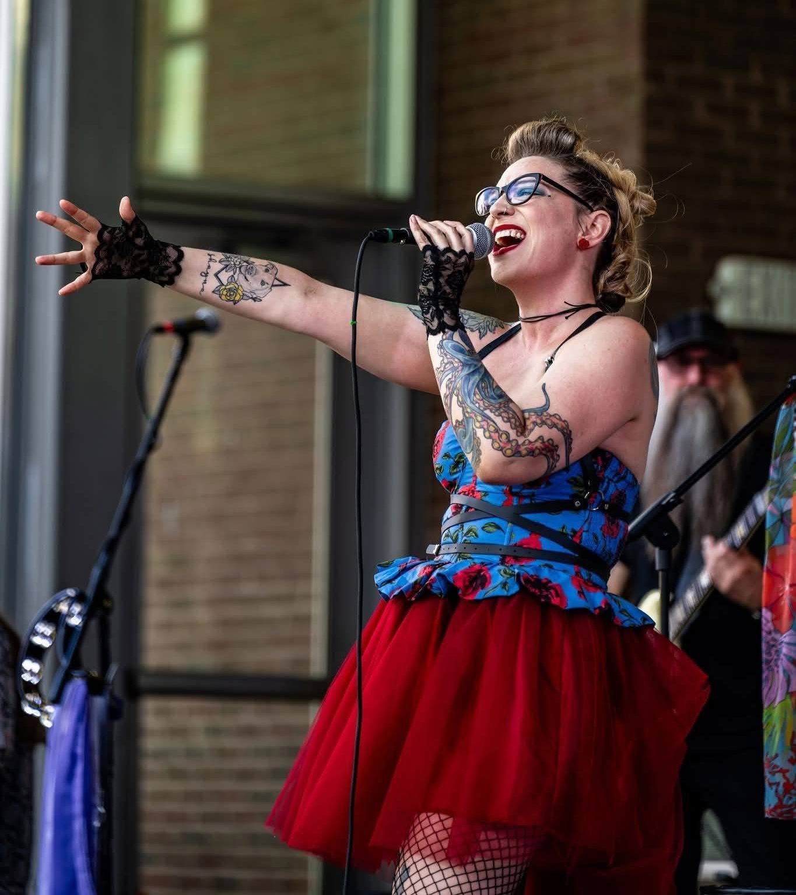
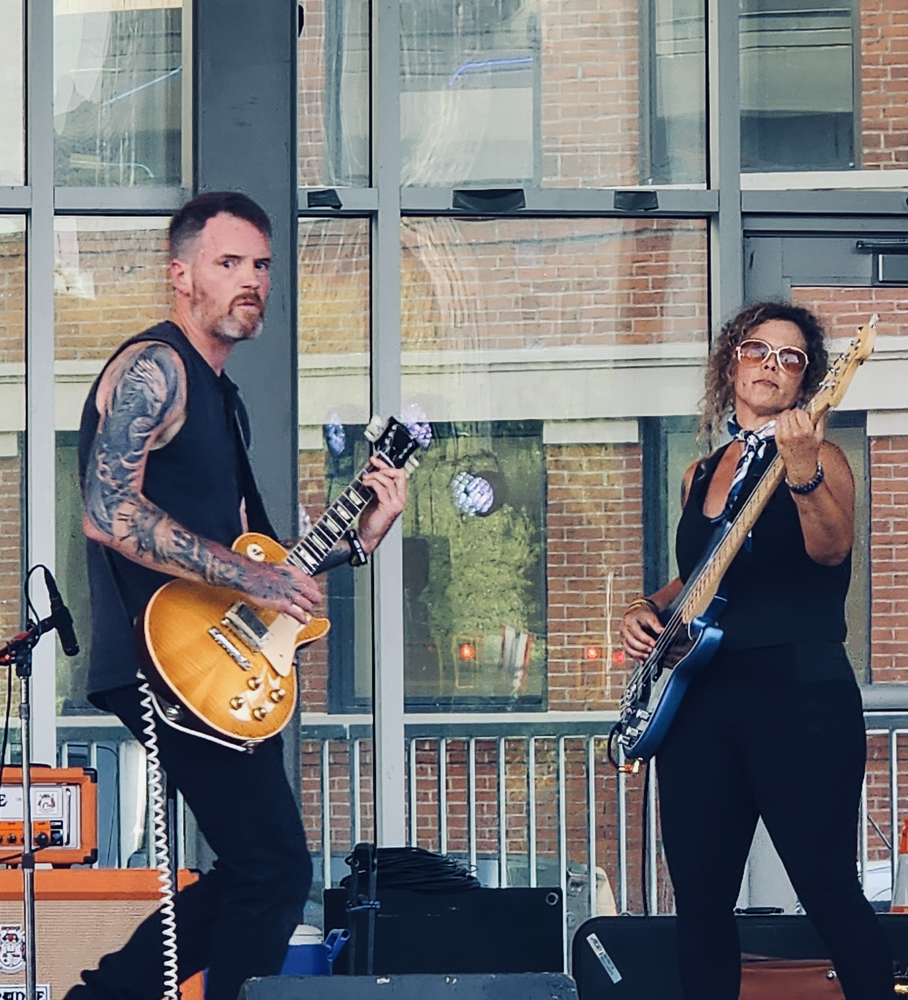
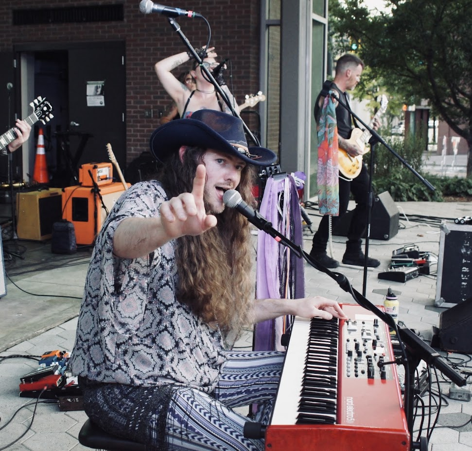

The Band
Five Musicians. Five Different Stories. One Band
Habitual Strangers brings together five musicans with different backgrounds, generations and musical influences. What started in Chattanooga in 2024 has grown into a sound built around original music, rock and alternative influences, and five distinct musical personalities.
Meet the Strangers
Jess

Lead Vocals
A lifelong vocalist and songwriter, Jess began performing as a kid and later studied jazz, classical music and musical theater at the Greater Hartford Academy for the Arts. After stepping away from muisc for many years, she found her way back and began writing her own songs-eventually releasing multiple singles and her 2023 album, Spiritual Cabaret.
Drawing inspiration from rock, jazz, classical and indie-pop, Jess brings a distintive voice and commanding stage presence to Habitual Strangers. She doesn't just sing a song...she performs it, bringing emotions, movement and personality to every stage. Her vocals can move from dreamy and vulnerable to raw and powerful, whle her songwriting brings another dimension to the band's original music.
Luke & Paige

Lead Guitar & Bass
Luke
Luke joined Habitual Strangers in February 2026 and quickly became a major part of the band's sound. With experience playing in pop, alternative rock, metal and praise bands, he brings versatility, feel and an instinct for letting the mood of a song guide every note.
Sean

Keys and Backup Vocals
Sean is a trained pianist who brings keys, backup vocals and his own distintive personality to Habitual Strangers. His playing adds another layer to the band's sound, moving easily from piano-driven originals to rock, alternative and everything in between.